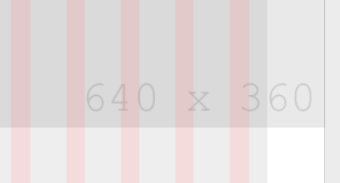
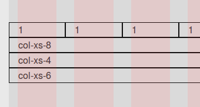
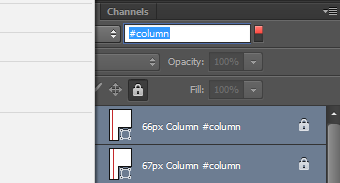

Bootstrap 4 PSD Template
My Bootstrap themes start their life as a mockup in Photoshop. When designing for Bootstrap, it comes in handy to have the targeted column sizes available in some form, so objects and text can be aligned to the grid easily. For Bootstrap 3, there’s a myriad of good templates, but for the upcoming Bootstrap 4 there is not much around yet. This is why I created this Bootstrap 4 PSD template as a foundation to quickly mockup a theme or website I want to build. Here’s a quick overview of the features I’ve included. For a more detailed rundown, see further down.
Features
- Artboards for xl, lg, md and sm viewport sizes
- Shape objects for columns and gutters
- Screen size helpers for common screen sizes
- Test images rendered in an actual browser
- #-tagged layers to facilitate style changes
- Guides along the column borders
- Based on the latest Bootstrap 4 alpha release (currently alpha 2)
- Non-artboard version for xl, that should work in older PS versions
This Photoshop template is free (as in free beer). I hope this helps someone.
Feature Details
Artboards
{kind=link}
Artboards were recently introduced in Photoshop CC and are very useful if you want to mockup your website for various screen sizes. I’ve added artboards for all Bootstrap breakpoints except xs. The reason that there is no artboard for xs is that on xs (<34em or <544px screen size), the container width is set to auto and therefore the columns will be a different size, depending on the viewport width.
Shape objects for columns and gutters
The main feature of any Bootstrap PSD template really. Both columns and gutters are
embodied by vertical columns with the exact sizes that Bootstrap will later use when CSS
classes such as col-md-5 are used.
{kind=link}
Screen size helpers
 When designing a website, it might also be useful to be aware of what area of your design will be visible at once. This is why I included rectangular shapes with the exact dimensions of the most commonly used screen resolutions.
{kind=link}
Test images rendered in Firefox
 In Bootstrap 4, not all container sizes are divisible by twelve without remainder, which leads to uneven column widths. In the current alpha release this happens on “large” viewports, where columns are either 48px or 49px wide. To keep things as accurate as possible, I’ve used real Firefox renderings of the columns to align and size the columns exactly as they are rendered in the browser.
{kind=link}
#-tagged layers
 Here’s a nifty Photoshop cheat I learned recently: In order to change the color (or other shape attributes) of many objects scattered over a file, give them #tags and use the find-by-name function. Change one of them, and then use “Copy / Paste Shape Attributes” from the context menu to change all the others in the same way. This template has related objects tagged in a meaningful manner so colors and other attributes can be changed easily.
{kind=link}